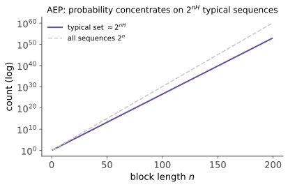

本页目录
信息论进阶 I · AEP 与典型集
对标：Cover & Thomas EIT §3、§4.1–4.3 ｜ 前置：本科信息论 I–III、mt-02 研究生信息论的第一件武器是 AEP（渐近均分性）：长序列的概率世界"塌缩"成一个几乎均匀的典型集。它是信息论一切编码定理的证明引擎——本科"熵 = 压缩极限"的口头支票，本页用典型集正式兑付，并推广到熵率（有记忆信源）。
学习层：最可能的序列，为什么常常不“典型”？
1. 具体情境：一枚偏置硬币的全部类型
令 \(X_i\sim\operatorname{Bernoulli}(p)\) 独立同分布。一条长度 \(n\)、含 \(k\) 个 1 的具体序列，其每符号自信息是
同一 \(k\) 有 \(\binom nk\) 条序列。AEP 说概率质量最终集中到自信息接近 \(H_2(p)\) 的序列集合；它没有说冠军序列最典型。若 \(p=0.9\)，全 1 序列单条概率最大，却因经验频率没有保留典型波动，在常用 \(\varepsilon\) 下可能落在典型集外。
2. 先预测：单条概率、条数和总质量分账
- 增大 \(n\) 时，典型集占全部 \(2^n\) 序列的比例会趋近 1，还是可能指数变小？
- 典型集的概率质量趋近 1，是否意味着其中每条序列的概率完全相等？
- 用 \(2^{nR}\) 个码字覆盖信源时，逆向证明只估计“与典型集相交”的质量是否已经完整？
3. 有限类型账本
无 JavaScript 时的静态读法：取 \(p=0.9,n=100,\varepsilon=0.1\)，有 \(H_2(p)\approx0.469\)。渐近中心尺度是 \(2^{nH}\approx2^{46.9}\)，但当前有限典型带精确包含 \(k=87,\ldots,93\) 的类型，故 \(\log_2|A_\varepsilon^{(100)}|\approx52.886\)，概率质量约为 \(0.75897\)。它远小于全部 \(2^{100}\)，且随 (n) 增大质量才在定理条件下趋近 1；全 1 序列的每符号自信息约 \(0.152\)，单条最可能却未必落在窄典型带中。
实验揭示后可调 \(p,n,\varepsilon\)，按二项类型精确汇总典型质量与序列条数，并单列冠军序列。组合数和概率在对数域计算，避免大 \(n\) 溢出；结果是有限 \(n\) 的精确 Bernoulli 类型账本，不是一般信源的 SMB 定理证明。
4. 渐近结论的条件与逆向证明的尾项
- i.i.d. AEP 可由大数定律推出；有限字母表自动满足有限熵条件。对一般平稳遍历信源需 Shannon–McMillan–Breiman 定理。
- 典型集内概率只在指数尺度上近似均匀，不是逐条严格相等。
- 编码逆向若令 \(B_n\) 为至多 \(2^{nR}\) 条可编码序列，则
第一项是非典型尾部，第二项才是典型交集；漏掉第一项，证明不完整。
1. AEP：大数定律的信息论化身

定理（AEP） \(X_1, \dots, X_n\) i.i.d. \(\sim p\)，并假设自信息可积（有限字母表且有限熵时自动满足）：
【证明】 \(-\frac1n\log p(X^n) = \frac1n\sum_i\big[-\log p(X_i)\big]\)——i.i.d. 随机变量（均值恰为 \(H\)）的样本平均，弱大数定律（mt-02）一行。\(\blacksquare\)
读法：长序列的概率集中在 \(2^{-nH}\) 一个量级上——"发生的序列几乎都是等可能的"。由此定义：
典型集 \(A_\varepsilon^{(n)} = \big\{x^n: 2^{-n(H+\varepsilon)} \leq p(x^n) \leq 2^{-n(H-\varepsilon)}\big\}\)。
性质三条【证明】：① \(P(A_\varepsilon^{(n)}) \to 1\)（AEP 的直译）；② \(|A_\varepsilon^{(n)}| \leq 2^{n(H+\varepsilon)}\)（每个成员概率 \(\geq 2^{-n(H+\varepsilon)}\)、总概率 \(\leq 1\)——计数即除法）；③ \(|A_\varepsilon^{(n)}| \geq (1-\varepsilon)2^{n(H-\varepsilon)}\)（大 \(n\)；同法反向）。\(\blacksquare\)
世界观：\(|\mathcal{X}|^n\) 个可能序列中，只有 \(2^{nH}\) 个"实际会发生"（占比 \(2^{-n(\log|\mathcal{X}| - H)}\)——指数级稀疏），且它们近似等概率。"高维概率集中在薄壳上"（hdp-01 §3）的信息论平行版：大数世界的多样性由熵精确计价。
2. 信源编码定理（典型集版证明）
定理 i.i.d. 信源可以 \(n(H + \varepsilon)\) 比特/块无损编码（错误率 \(\to 0\)）；低于 \(H\) 则不可。 【证明】 （正向）只给典型集编号：性质②说 \(n(H+\varepsilon) + 1\) 比特够用；非典型序列任意处理——出错概率 \(\leq P((A_\varepsilon^{(n)})^c) \to 0\)（性质①）。（逆向）对固定的 \(R<H\)，先选定 \(0<\varepsilon<H-R\)。任何至多覆盖 \(2^{nR}\) 条序列的码本 \(B_n\)，满足 \(P(B_n)\leq P(A_\varepsilon^{(n)c})+2^{nR}2^{-n(H-\varepsilon)}\)；再令 \(n\to\infty\)，非典型尾与指数项才都趋零——可靠编码覆盖不住典型集。\(\blacksquare\) （对比本科信息论 I 的 Kraft/Shannon 码证明：那是逐符号的构造性路线（多付最多 1 比特/符号），本页是分块渐近路线——精确到 \(H\)、但只是存在性：两条路线互补，后者的"随机分块 + 典型性"手法是下一页信道定理的预演。）
3. 熵率：有记忆信源
真实信源（语言！）不独立。对平稳离散信源，熵率可写成：
【证明（两定义等价）】 平稳性使条件熵序列 \(H(X_n\mid X^{n-1})\) 可在平移后比较，并随可用过去增长而单调不增，且非负 ⇒ 有极限；链式法则把 \(\frac1nH(X^n)\) 写成其 Cesàro 平均——收敛列的 Cesàro 平均同极限。没有平稳性时，这两个极限未必存在或相等，不能照搬这段论证。\(\blacksquare\)
平稳遍历信源的 AEP（Shannon–McMillan–Breiman）【引用】：\(-\frac1n\log p(X^n) \to H(\mathcal{X})\) a.s.——AEP 推广到有记忆世界（证明需遍历定理，Durrett §7）。压缩极限 = 熵率照旧成立。
Markov 信源的熵率【证明】：平稳 Markov 链：\(H(\mathcal{X}) = H(X_2\mid X_1) = -\sum_i \pi_i\sum_j P_{ij}\log P_{ij}\)（条件熵定义式在平稳分布下取平均——随机过程线的 \(\pi\) 在此就业）。
🔗 LLM 对账：语言的熵率 ≈ 每字符 1 比特级（Shannon 的著名实验【引用】）；语言模型的交叉熵/困惑度就是对熵率的上界估计（本科信息论 III"压缩即智能"的研究生版语言）——模型越强、估计越贴近真实熵率；"LLM 压缩互联网"的理论天花板就是 SMB 定理里的那个 \(H(\mathcal{X})\)。
4. 练习与要点
例 1（典型集数感） 有偏硬币 \(p = 0.9\)，\(n = 100\)：\(H \approx 0.469\) ⇒ 典型集约 \(2^{47}\) 个序列——占全部 \(2^{100}\) 的 \(2^{-53}\)（十万亿亿分之一），却占概率的几乎全部；且最可能的单个序列（全 1）不在典型集里（\(-\frac1n\log p = 0.152 \neq H\)）——"最典型 ≠ 最可能"：典型集是"大数的众生相"，不是"冠军"。这个反直觉是 AEP 理解的试金石。
例 2（熵率计算） 二状态 Markov 链 \(P = \begin{pmatrix}0.9 & 0.1\\ 0.5 & 0.5\end{pmatrix}\)：\(\pi = (\frac56, \frac16)\)，\(H(\mathcal{X}) = \frac56 h(0.1) + \frac16 h(0.5) \approx 0.558\) 比特/步——对比独立同边缘的 \(H(\pi) \approx 0.65\)：记忆压低熵率（可预测性 = 可压缩性）。
例 3（SMB 的实践影子） 用 gzip 压缩自己一年的日报文本估计熵率：压缩比 ≈ 熵率/8 比特——粗糙但方向正确的"个人语言熵"测量；换用 LLM 的困惑度会得到更紧的上界（两代压缩器的代差可测）。\(\blacksquare\)
下一页：本科欠下最大的一张票——信道编码定理的证明：随机编码 + 联合典型性，Shannon 最惊人的论证。